Engineering updates on the automated lab for protein functional screening.
Highlighted Posts
All Posts
Mar 19, 2026Lab Automation
CiCi: From Prototype to Protocol Engine
CiCi started as a guided checklist for lab operators. It's now a protocol engine that scientists can author, run, and audit themselves.
The first version was straightforward: an operator sees a task ("Acquire DNA Plate"), accepts it, and follows step-by-step instructions with barcode verification at each stage. If the scanned plate doesn't match what the system expects, the task blocks. You don't need a robotic arm to stop someone from putting plate P294 in the wrong bay. You just need a screen and a scanner.
That prototype validated the core interaction loop, but every protocol was hardcoded. With this new standalone varient of the tool, scientists create their own protocol templates using plain-language steps with variable placeholders like Retrieve {dna_plate} from the {20C Fridge}, and the system handles the rest. Each variable is typed: a Plate, a Fridge, a volume in mL. When an operator runs the protocol, CiCi resolves those variables against real lab inventory, validates inputs, and enforces the correct units. No one touches code to add a new workflow.
Typed variables enable conditional logic: steps that gate on measured values, equipment state, or whether a previous timer has been dismissed. A step like "proceed only if water_level > 50 mL" works because the system knows water_level is a number measured in milliliters, not a free-text string. Guard rails that feel invisible to the operator but prevent an entire class of protocol errors.
We also built a full reminder and timer system that lives on the server rather than in a browser tab. Incubation steps create countdown timers that persist across devices, survive closed tabs, and sync between multiple operators viewing the same run. Subsequent steps can gate on timer dismissal, so the protocol won't advance past "wait for incubation" until the timer fires and the operator acknowledges it. Every scientist we've talked to juggles multiple timed steps across multiple experiments with phone alarms and sticky notes. This alone makes CiCi more useful than a paper notebook.
Every action during a run (step completions, variable assignments, reminder events, equipment scans) is recorded in an immutable activity log with second-level timestamps. Data provenance is a day-one concern, not something we plan to add later. The audit trail serves operators reviewing their work, PIs verifying protocol compliance, and eventually regulators who need complete traceability from sample to result.
CiCi exists in two forms going forward. As a standalone tool, it's immediately useful to anyone running repeatable procedures in academic labs, core facilities, and teaching labs. We plan to release it as a free tool on the Diff Bio platform, with a paid tier for teams that want to share templates. As an orchestrator-driven interface, it becomes the human-machine bridge in our automated lab, where the system assigns tasks and operators execute them with the same verification and audit infrastructure. Both versions should share the same codebase and the same philosophy: every action verified, every action recorded.
We want to approach friendly labs in the coming weeks for ergonomic feedback. The protocol engine works. Now we need to watch scientists use it and learn what we got wrong about the workflow.
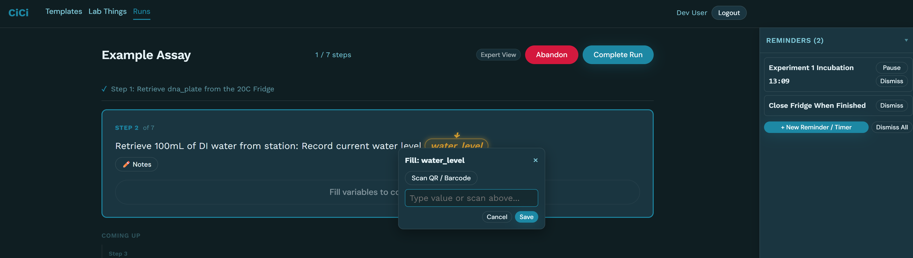
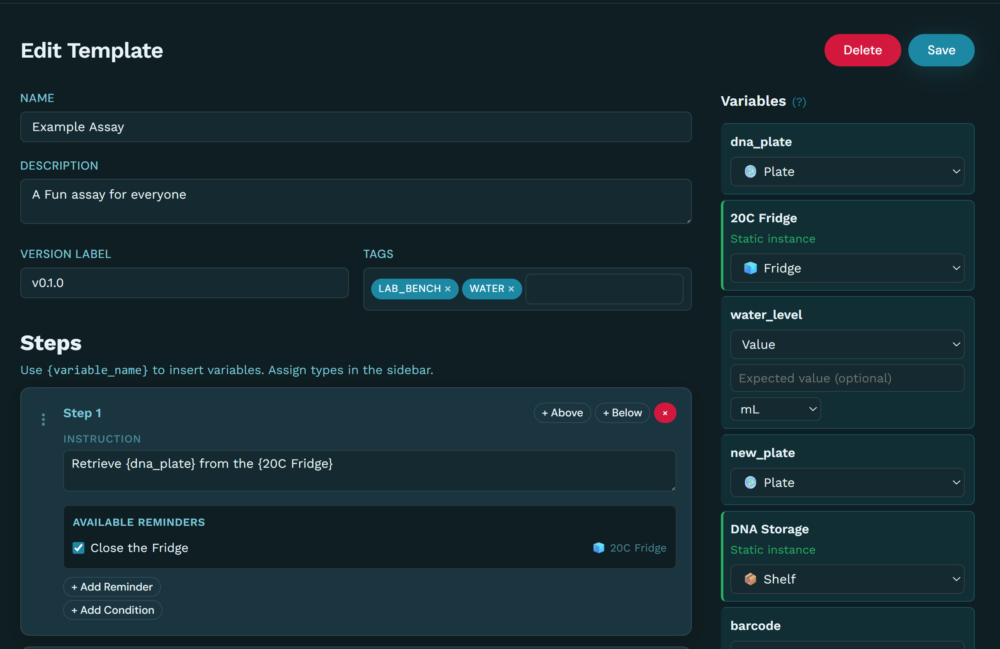
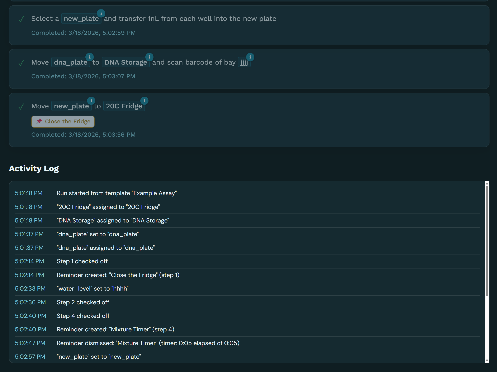
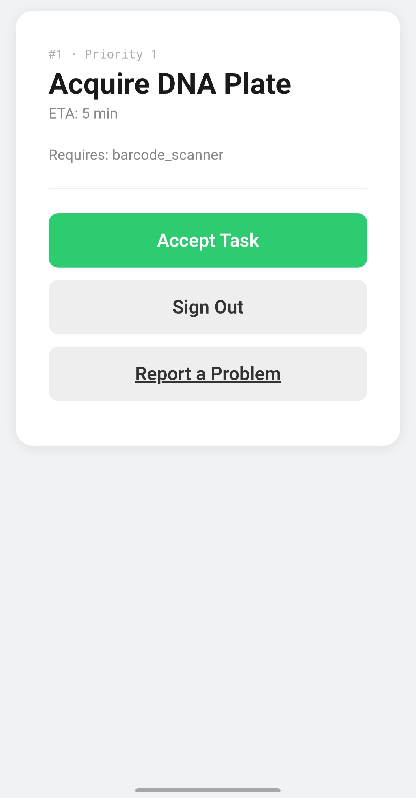
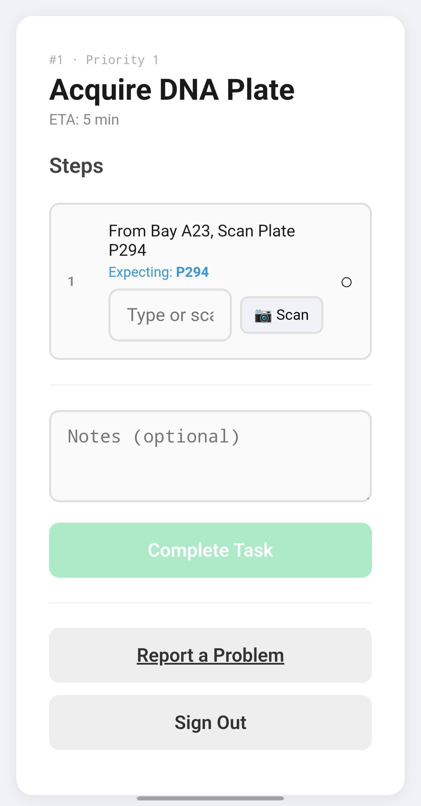
Feb 22, 2026Platform
Design To Data In Days, Not Weeks (Mockup)
One interface concept for the entire protein engineering loop, from structure prediction to wet lab results.
The platform is targetting a single web interface where researchers go from hypothesis to physical data without switching tools. Pick a protein target, run structure inference (AlphaFold 3, Boltz-1), visually design sequence variants, then order wet lab experiments, all from the same workspace. Results come back with full provenance: expression levels, binding affinity, solubility, thermostability, version-tracked so every iteration builds on the last.
Structure inference is built into the platform. Researschers configure and launch prediction runs directly, then use those predictions to inform what they send to the lab. The goal is a tight loop between computational prediction and physical validation, where each round of data makes the next prediction better.
Ordering is designed to feel like checking out a cart, not filing a lab request. Select variants, pick assays, set parameters, submit. Under the hood, that order becomes a set of commands to the automated lab. The lab executes autonomously, and results flow back to the platform with every detail of how the data was produced.
These mockups represent the north star for the platform experience. The lab automation work covered in the rest of this blog is what makes it possible.
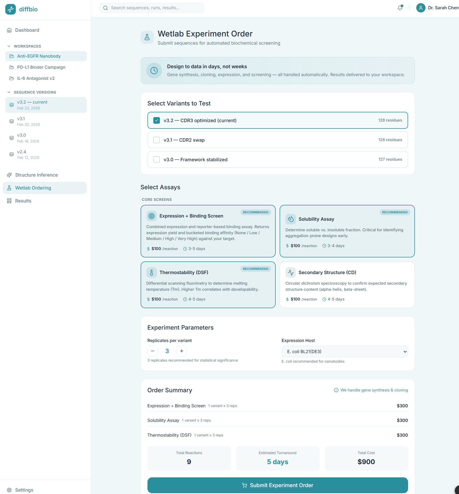
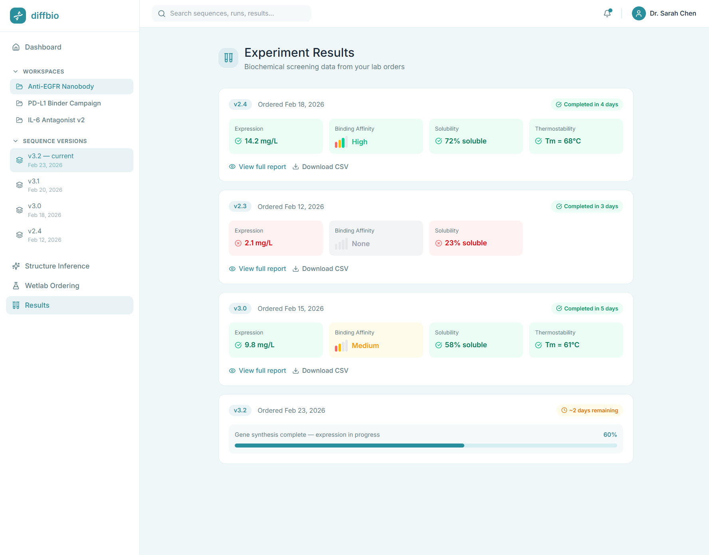
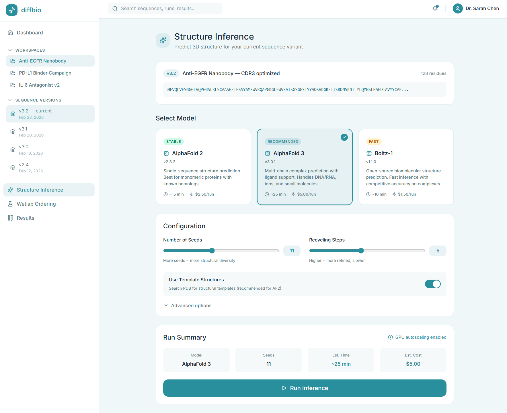
Feb 20, 2026Lab Automation
Humans First, Robots Later (Mockup)
The key architecture decision: humans do the plate transfers first. Robots come later. The interfaces stay the same throughout.
In our first deployment, all physical plate transfers are performed by human operators guided by CiCi on station-mounted tablets. The orchestrator commands instruments directly. Operators don't touch instrument controls. They move plates to the correct positions, and the system detects arrival and triggers instrument sequences automatically.
This works because of the Standard Dock. Every position where a plate can rest in the lab uses the same mechanical interface: staging stations, instrument decks, storage transfer points, human intake stations. One design everywhere. Each dock provides three core capabilities: unique plate identification (the system always knows which plate is where), orientation constraint (a plate can only be placed one way), and presence confirmation (the system knows a plate is correctly seated, not just nearby). Together, these auto-detect both identity and position without a separate scan step.
The operator workflow follows naturally: CiCi shows what plate needs to go where. The operator picks up the plate (the dock detects departure), carries it to the destination, and places it down (the dock detects arrival and confirms identity). If they grab the wrong plate or go to the wrong station, the system blocks and tells them how to correct it.
When robots eventually replace human transfers, the Standard Dock stays the same and the orchestrator's core logic stays the same. Only the thing moving the plate changes. This lets us validate the full workflow (sample intake, orchestration, instrument control, data collection, provenance) before investing in custom robotics.
The Standard Dock also supports non-standard labware. Tubes, deep-well plates, and custom containers sit in adapter bases that present the standard footprint. Everything enters the tracking system through the same path.
The mockups below are early ergonomic explorations of the operator interface. CiCi has since become the working implementation of this concept.
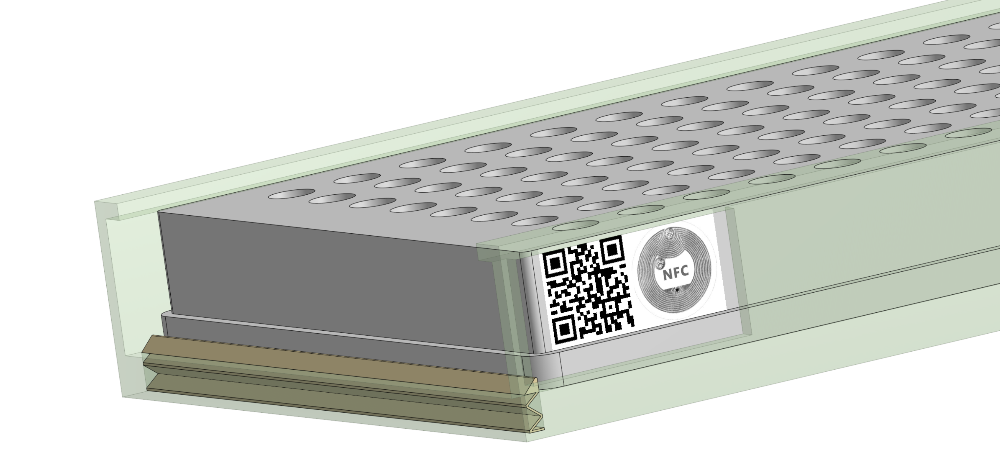
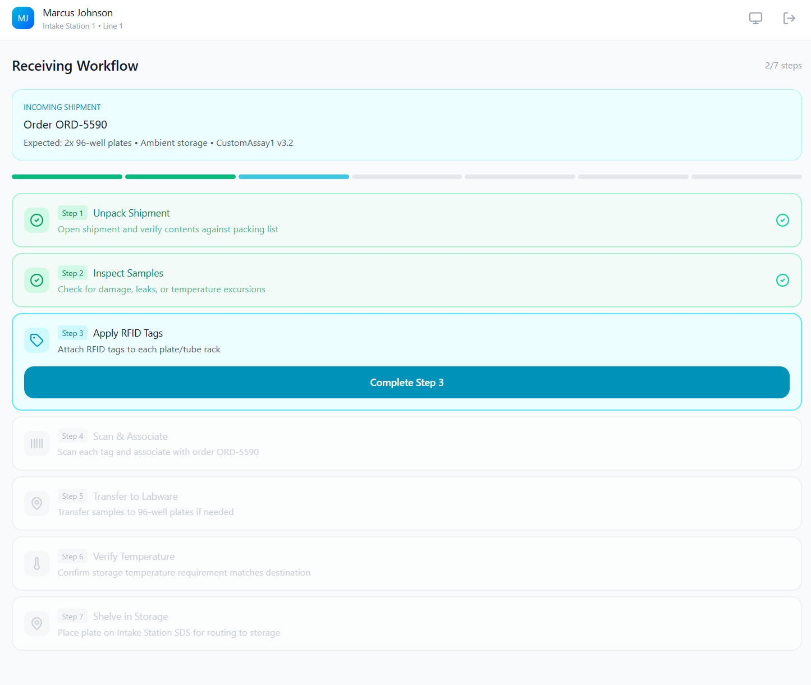
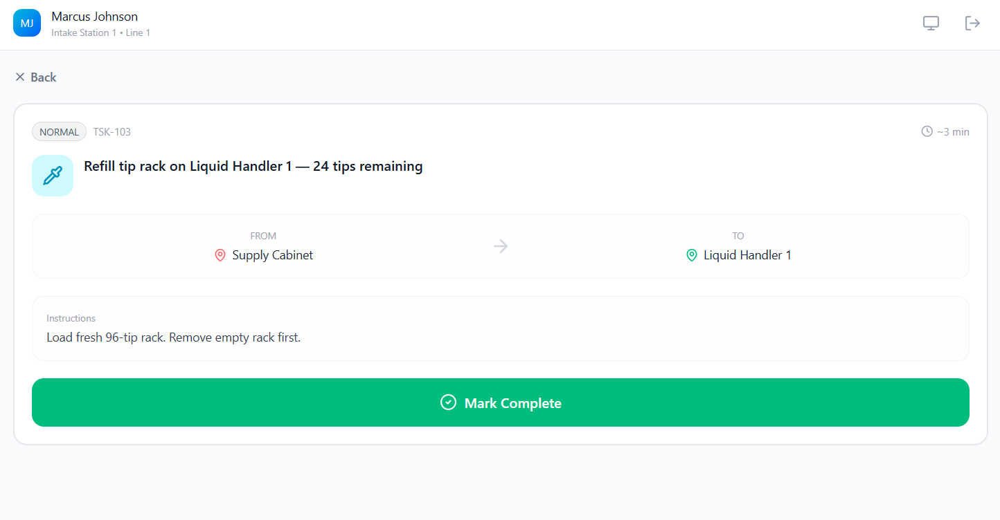
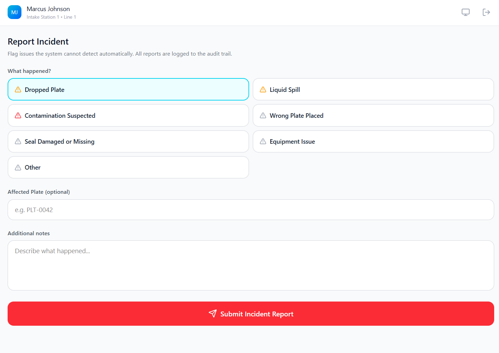
Feb 10, 2026Lab Automation
The Orchestrator (Mockup)
The orchestrator is the software layer that runs the lab.
It schedules work, tracks every plate, commands every instrument, and collects all data. It's event-driven: it builds its understanding of the lab entirely from sensor telemetry (dock events, instrument status reports, position updates, environmental monitors). It sends commands down and receives events back up. It doesn't assume a plate has moved until sensors confirm it.
At the center is a world model: the orchestrator's real-time picture of the entire lab state. Robot locations, instrument status, plate positions, resource reservations, everything. Every scheduling decision is made from this model. The orchestrator is always looking for the next action that progresses an experiment: if an instrument is idle and a plate is ready, it dispatches. If it detects an inconsistency (a plate appearing where none should be), it halts new dispatches and alerts the operator.
Multiple experiments run concurrently. While one plate is on the liquid handler, another can be retrieved from storage, and a third can be moving to the plate reader. A proof-of-concept version of this orchestrator is running against our lab simulation today, validating scheduling logic and resource contention handling.
The same orchestrator code will run against both our simulation and physical hardware. The telemetry interface is the abstraction boundary. We validate logic and failure scenarios in simulation, then connect to real equipment without changing the orchestrator.
Every action is recorded in an immutable, tamper-evident audit trail from day one. Not a future compliance feature, a launch requirement. Every plate transfer, every protocol execution, every fault, every human intervention is timestamped and attributed to a specific actor, whether that's a human operator or a system component. The result is complete provenance: for any piece of data the lab produces, you can trace exactly how it was generated, which instruments touched it, who handled it, and what happened along the way.
The mockups below are ergonomic explorations of the command center, the web dashboard where operators and engineers will monitor the lab in real time.
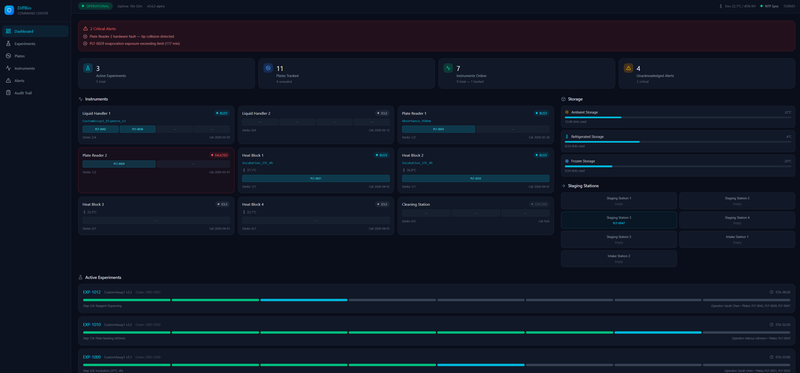
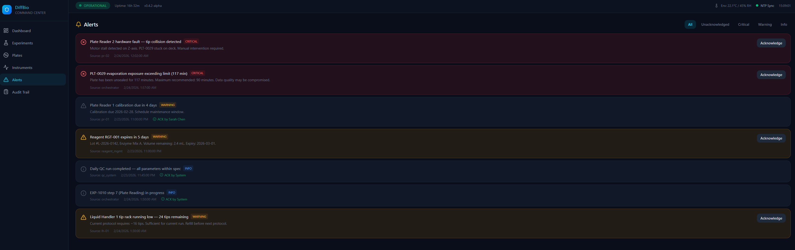
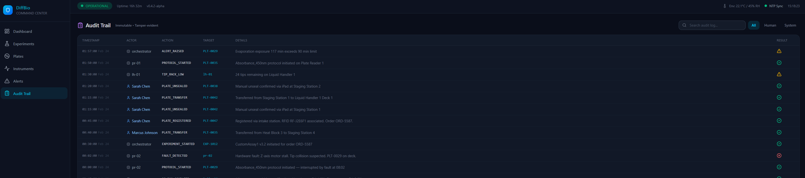
Jan 15, 2026Lab Automation
Lab Simulation
We built the simulation to prove orchestration logic before committing to hardware.
It's a deterministic, tick-based engine that models the physical lab in software. Nodes (robots, stations, instruments) are small state machines that emit the same telemetry events as their physical counterparts. Because time advances in discrete ticks, we can reproduce exactly what happened from the same initial state and inputs. Same inputs, same outputs, every time.
The simulation runs at configurable speed: 1x for real-time observation, 10x or 100x for rapid scenario coverage. We've run complete 100-plate sequences start to finish with performance holding steady, and we use accelerated runs to cover workflow variations in the time it would take to run one physical experiment.
The orchestrator connects to the simulation over the same interface it will use with real hardware. It doesn't know or care whether it's talking to a simulation or physical equipment. That means every orchestration bug we find in simulation is a real bug we caught before it reached the lab.
This has already paid off. Coordinating batches of nodes surfaced race conditions in resource reservation that would have been painful and expensive to debug on physical hardware. Working these out in simulation, where we can replay scenarios deterministically, is exactly the kind of technical de-risking that keeps the project moving forward efficiently.
We inject faults on purpose (instrument failures detected through heartbeat timeouts) to validate recovery behavior while it's cheap to fix. The fault handling logic we write for simulation is the same logic that runs in production.
Jan 3, 2026Transport System Prototype
First End-To-End Transfer
The cart picks up a plate, rides the rail, and places it at the destination station. End to end.
The goal was to get the full transfer loop working: pick up, travel, place down, return. Two stations, a lift, and one controller sequencing the whole operation. We wanted to see the complete cycle running so we could evaluate the mechanism, the control logic, and the failure modes all at once.
The vertical lift mechanism turned out to be a weak point. It worked, but not reliably enough to run unattended. That was a valuable finding: it pushed our thinking toward a single-plane transport model where everything moves laterally on one level, avoiding the complexity and failure modes of vertical motion entirely. Simpler mechanics, fewer degrees of freedom, more predictable behavior.
Under the hood it's one SBC running a tight C++ loop: generate step pulses, shape acceleration for smooth motion, and sequence a station state machine. Repeatability was the primary concern. We added sensor-based position confirmation so the cart stops at the same place every run, and built the state machine to handle edge cases gracefully. The goal was a system that could run for hours unattended with enough protection logic to keep things safe.
Our prototyping philosophy: get the first proof of concept running with a clear vision for where it's headed, then harden. Every prototype surfaces design considerations you didn't anticipate, and the earlier you find them, the cheaper they are to address.
Dec 26, 2025Transport System Prototype
Pushing Prototypes to Breaking Points
We ran the rail at increasing speeds to find where the mechanical constraints are (especially with 3D printed parts).
The limit showed up quickly: aggressive acceleration creates enough torque to lift the cart off the track. That tells us exactly where to focus the next mechanical iteration: mass distribution, clamping force, and packaging.
On the control side, we split responsibilities into two layers: a low-level stepper controller generates the pulse train and handles acceleration ramps, while a higher-level position controller runs the station state machine. This separation was partly forced by the compute hardware. Running precise GPIO timing within Linux pushed us to evaluate whether production will need a dedicated real-time controller (something like an STM32) for the motion layer. Another example of how building early prototypes surfaces questions you wouldn't think to ask on paper.
The real goal was repeatability: running the system continuously and confirming that sensor-based position detection keeps the cart landing in the same spot every time, across hundreds of cycles.
Dec 21, 2025Transport System Prototype
Building The Transport Prototype
We built a complete rail-based transport prototype in two weeks, from concept sketches to moving hardware.
The core idea: move plates along a linear rail instead of using a robotic arm. Metal rails suspended on printed stands, with the cart's top surface dedicated to holding a plate. Everything else (controller, actuators, lift) hangs underneath so stations can overhang the track and the cart can deposit and retrieve without extra mechanisms at each position.
We modeled the full mechanism in CAD before printing anything to catch interference, bad load paths, and packaging mistakes early. The rails and bearing wheels are the only off-the-shelf parts; nearly everything else is 3D-printable. Building the system as sub-assemblies made it easier to reason about actuator placement, gear rail location, and clearances before committing to a layout.
The lift mechanism went through two iterations. The first scissor lift looked fine in CAD but the printed parts flexed too much at the tolerances our printer could achieve. The material and part scale didn't support the design. We replaced it with a compact servo-driven cam lift that proved stiffer, simpler to tune, and a better foundation for adding position feedback later.
The station design was an early physical prototype of what became our Standard Dock concept: a universal interface that makes plate placement predictable and repeatable. When the cart arrives, the plate lands in the same position every time. The same principle now drives every plate position in the lab architecture.
One of the less obvious lessons: wiring is a design problem, not an afterthought. Our first pass skipped header pins on the perfboard, which made troubleshooting and modifications unnecessarily difficult. Purpose-built modules with clear scope boundaries (this board does one thing, that connector goes one place) eliminated a class of integration headaches. Thinking in terms of "what if I need to change this later" from the start saves real time downstream.